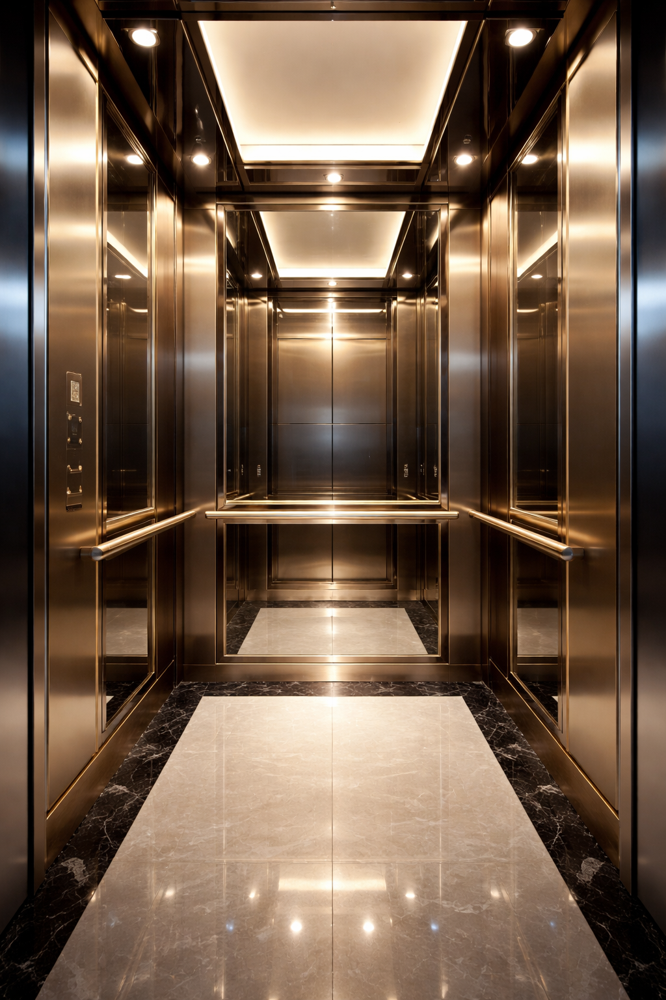

Projelendirmeye Uygun İmalat
Binaların trafik hesaplarına ve avan projelerine uygun olarak imal edilir ve yerinde monte edilir.


İnsan taşınmasını esas alan; konfor, güvenlik ve kullanım rahatlığı ön planda tutularak tasarlanan modern insan asansörü çözümleri sunuyoruz.
İnsan asansörleri, esas olarak insan taşınmasını amaçlayan ve kullanım konforu ön planda tutulan asansör sistemleridir. Konut projelerinden otel, hastane ve iş merkezlerine kadar farklı yapı tiplerinde güvenli ulaşım sağlar.
ASVEL Asansör olarak, projelendirme aşamasında yapılan trafik hesaplarına ve avan projelere uygun çözümler geliştiriyor; üretim, montaj ve kullanım sürecinde uluslararası güvenlik ve konfor standartlarını esas alıyoruz.

Kullanım alanına göre belirlenen taşıma kapasitesi ve kişi sayısı ile yapı ihtiyaçlarına uygun sistemler sunulur.
Konutlarda genellikle 240 kg ile 1000 kg arasında insan taşımaya uygun sistemler tercih edilir.
Otel, hastane ve iş merkezi gibi yapılarda 630 kg ile 1600 kg arasında insan ve/veya yük taşıma kapasitesine uygun çözümler uygulanır.
İnsan asansörleri, proje ihtiyacına göre 3 kişiden 21 kişiye kadar farklı kapasite seçenekleriyle tasarlanabilir.
Asansör hızları, binanın yüksekliği ve kullanım yoğunluğuna göre belirlenerek 0,63 m/s ve üzeri değerlere göre planlanabilir.
İnsan asansörleri, yapı trafiği ve mimari projeye göre planlanır; güvenlik, verimlilik ve uzun ömürlü kullanım hedefiyle üretilir.
Binaların trafik hesaplarına ve avan projelerine uygun olarak imal edilir ve yerinde monte edilir.
Üretim, montaj ve montaj sonrası kullanım süreçlerinde uluslararası güvenlik ve konfor standartları esas alınır.
Proje ihtiyacına göre elektrik motoru tahrikli veya hidrolik insan asansörü sistemleri uygulanabilir.